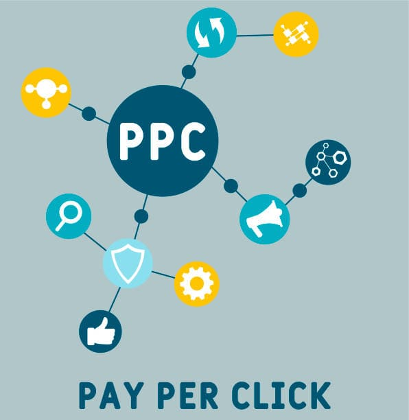
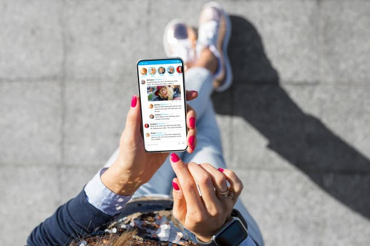
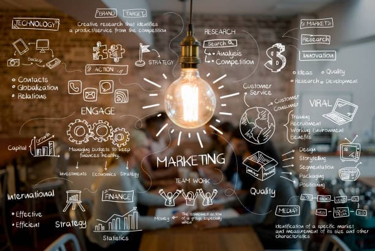

Social Media Marketing Services
Elevate Your Brand with Expert Social Media Marketing SolutionsIn today’s digital landscape, social media is more than just a platform for sharing updates; it’s a powerful tool for connecting with your audience, building brand loyalty, and driving sales. Our Social Media Marketing Services are designed to help you harness the full potential of social media, creating impactful campaigns that resonate with your target audience and achieve your business objectives.
Social Media Management
In the fast-paced world of social media, maintaining a consistent and engaging presence across various platforms is essential for building brand awareness and connecting with your audience. Our Social Media Management Services are designed to take the hassle out of managing your social media accounts, allowing you to focus on what you do best—running your business. We craft tailored strategies that not only increase your online visibility but also foster meaningful relationships with your customers.
Read MoreSocial Media Brand Management
In a digital world where first impressions are often made online, effective brand management on social media is crucial for establishing trust and fostering loyalty. Our Social Media Brand Management Services focus on enhancing your brand’s online presence, ensuring consistent messaging, and building meaningful connections with your audience. We help you craft a strong, cohesive brand identity that resonates across all social media platforms.
Read More

Franchise Social Media
In the competitive franchise landscape, effective social media management is essential for building brand recognition and engaging with local audiences. Our Franchise Social Media Management Services are tailored to help franchise businesses create a consistent and impactful online presence across multiple locations. We focus on local engagement while maintaining brand integrity, allowing each franchisee to connect with their community effectively.
Read MoreEnterprise Social Media
In today’s digital landscape, large organizations face unique challenges when it comes to managing their social media presence. Our Enterprise Social Media Management Services are designed to help corporations and organizations effectively navigate these challenges by creating a cohesive, impactful, and engaging social media strategy. We focus on maximizing brand visibility, enhancing customer engagement, and driving measurable results across multiple platforms.
Read More
Facebook Advertising
With over 2.9 billion active users, Facebook remains one of the most powerful platforms for reaching your target audience. Our Facebook Advertising Services are designed to help businesses of all sizes harness the full potential of Facebook’s advertising capabilities. We create tailored ad campaigns that drive traffic, increase brand awareness, and generate leads, all while maximizing your return on investment (ROI).
Read MoreLinkedIn Advertising
LinkedIn is the premier platform for B2B marketing, boasting over 930 million professionals and decision-makers. Our LinkedIn Advertising Services are tailored to help businesses connect with their target audience effectively, generate high-quality leads, and build valuable relationships. Whether you're aiming to increase brand awareness, drive website traffic, or promote specific products or services, our LinkedIn advertising strategies are designed to achieve your goals.
Read More
Twitter Advertising
With over 450 million monthly active users, Twitter is an essential platform for brands looking to engage in real-time conversations and connect with their audience. Our Twitter Advertising Services are designed to help you amplify your message, increase brand awareness, and drive conversions through targeted advertising strategies. Whether you're looking to promote a new product, boost event participation, or enhance your overall brand visibility, we create campaigns tailored to your specific goals.
Read MoreInstagram Advertising
With over 2 billion monthly active users, Instagram is a leading platform for visual storytelling and brand engagement. Our Instagram Advertising Services are designed to help businesses connect with their target audience, showcase their products or services, and drive meaningful interactions. Whether you aim to increase brand awareness, generate leads, or boost sales, we create tailored ad campaigns that deliver results.
Read MoreDigital PR Outreach
In today's digital landscape, effective public relations goes beyond traditional media; it involves building relationships and creating meaningful connections online. Our Digital PR Outreach Services are designed to enhance your brand’s visibility, credibility, and reputation through strategic outreach efforts. By leveraging digital platforms, we help you engage with your target audience, industry influencers, and media outlets to maximize your online presence.
Read MoreHARO Link Building
Help A Reporter Out (HARO) is a powerful platform that connects journalists with expert sources for their stories. Our HARO Link Building Services leverage this unique opportunity to help you gain high-quality backlinks, enhance your brand’s visibility, and establish authority in your industry. By responding to relevant queries from journalists and bloggers, we position your brand as a trusted source of information.
Read More